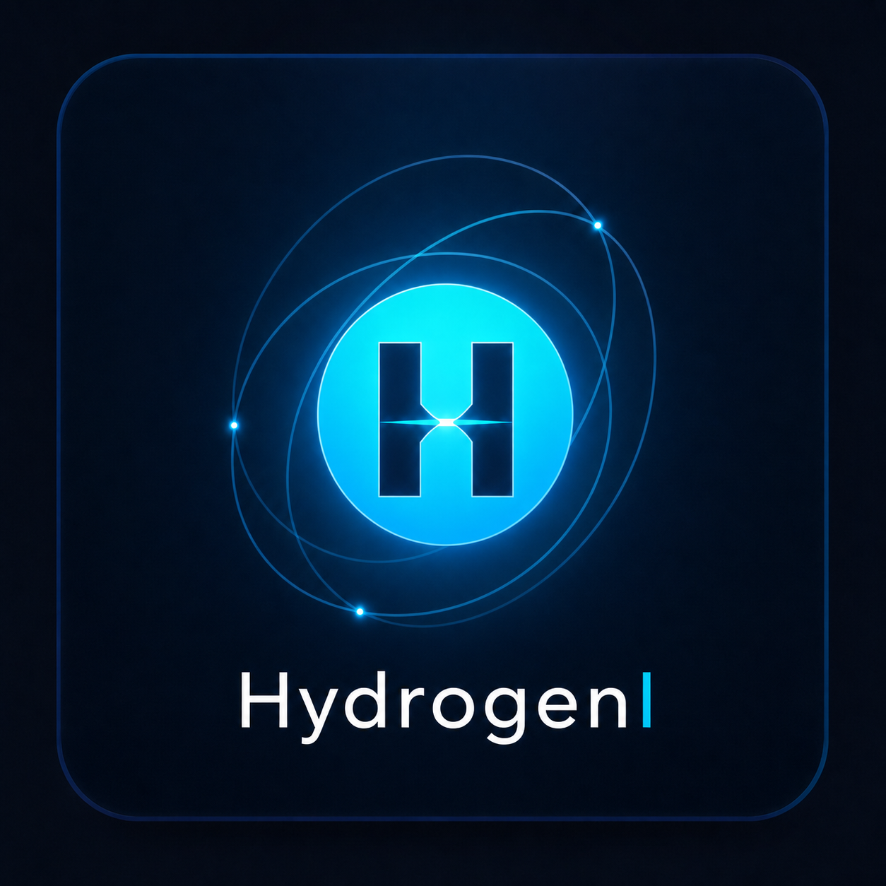

HYDROGENI LABPROJETO EM EQUIPE

BOXTWIN 3DPORTO DO ITAQUI · 2026
✦ Projeto vencedor de hackathonHydrogenI
HydrogenI
BoxTwin 3D
Gêmeo digital para monitoramento de fertilizantes.
Uma solução para medir e acompanhar o volume armazenado em boxes, aproximando sensores, visualização 3D e informações operacionais.